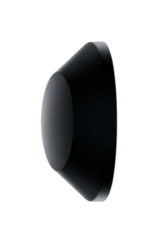
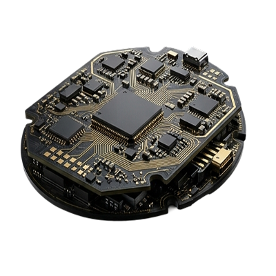
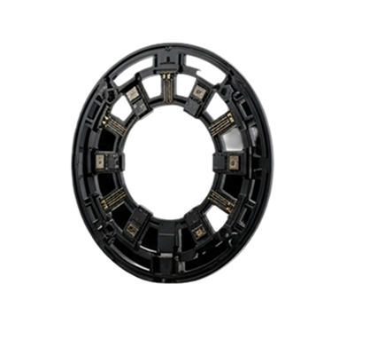
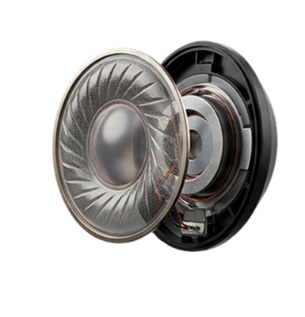
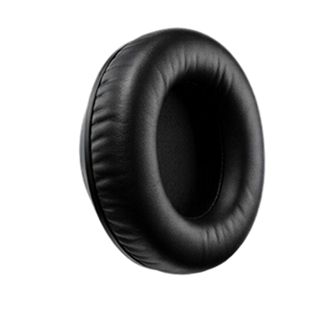
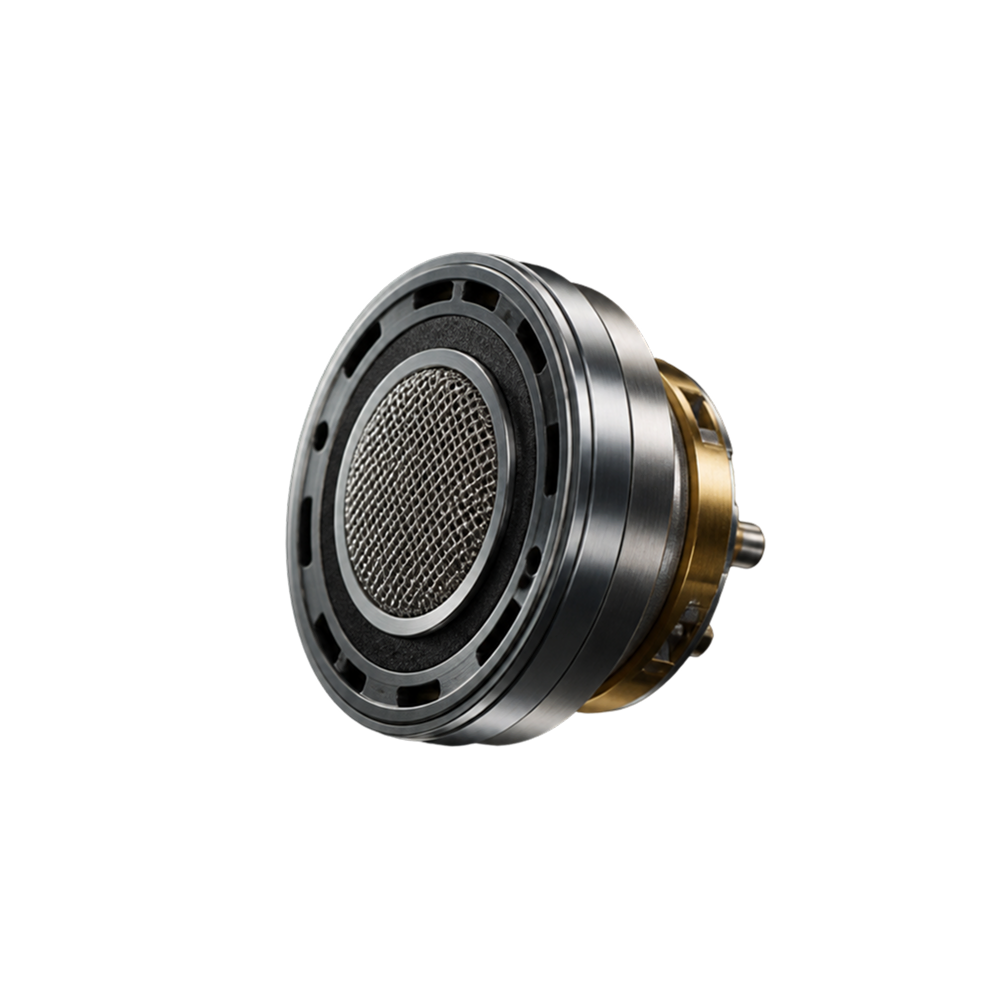
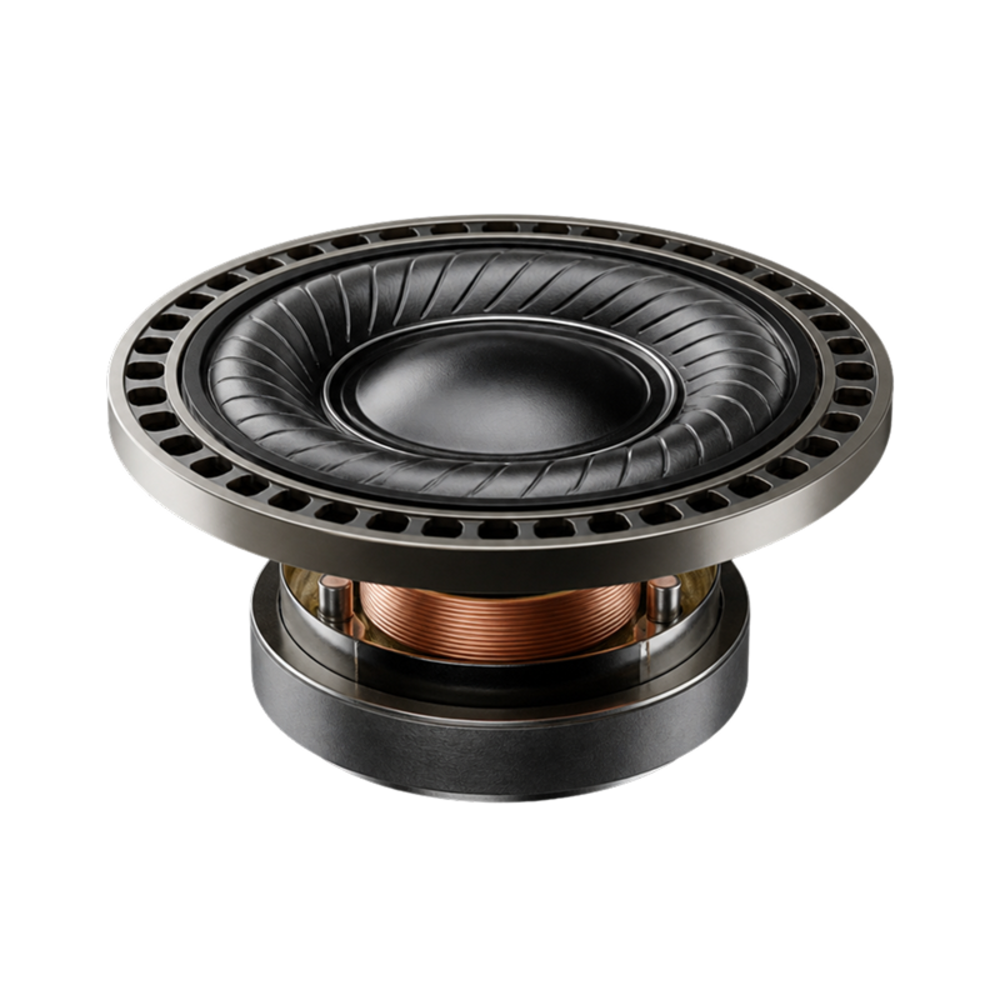
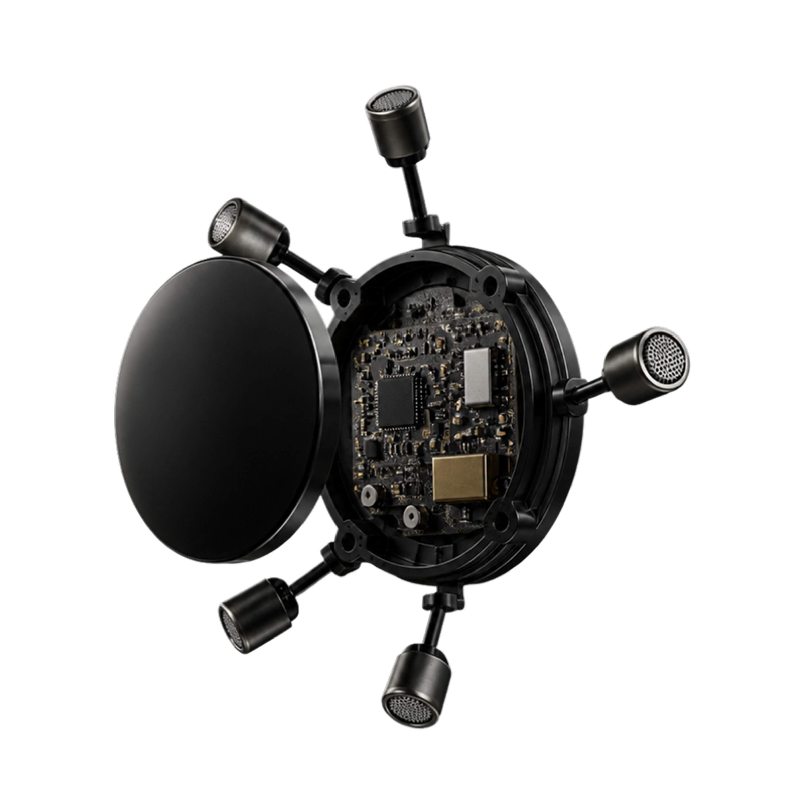

Engineered to Hear More
보이지 않는 기술이, 들리는 경험을 완성합니다.





Inside
하나의 이어컵 안에 다섯 개의 부품이 겹쳐 있습니다.

CustomTune
귀에 맞춰 완성되는 개인 맞춤 사운드
귀 구조를 분석해 사용자에게 맞는 사운드를 조정합니다.
측정 데이터를 바탕으로 오디오와 노이즈 캔슬링을 최적화합니다.
더욱 자연스럽고 균형 잡힌 사운드를 구현합니다.

Immersive Audio
공간을 채우는 새로운 사운드 경험
오디오 신호를 공간감 있는 사운드로 처리합니다.
드라이버와 오디오 프로세서가 입체적인 음향을 구현합니다.
더욱 현실감 있는 청취 경험을 제공합니다.
Noise Cancelling
세계 최초의 노이즈 캔슬링 기술
외부와 내부의 소음을 실시간으로 감지합니다. 반대 위상의 신호를 생성해 소음을 효과적으로 줄입니다. 더욱 조용하고 몰입감 있는 청취 환경을 제공합니다.
'소리 듣기'를 누르면 소리가 재생됩니다. 볼륨을 낮춘 뒤 눌러 주세요. 이어폰이나 헤드폰으로 들으면 차이가 더 잘 느껴집니다.

Active Sense
조용해야 할 때, 조용하게.
들어야 할 때, 선명하게.
주변 소음을 실시간으로 분석합니다. 환경 변화에 맞춰
노이즈 캔슬링을 자동으로 조절합니다. 필요한 순간 편안한
청취 환경을 유지합니다.